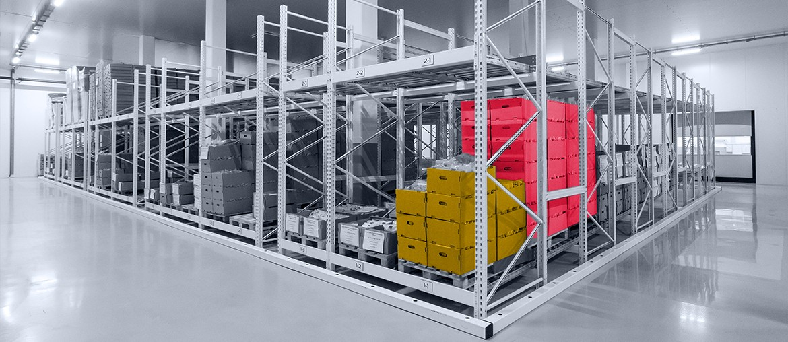

01
Map the mission flow
Map one active flow across AIT, thermal, payload, and ground teams. Mark where actions, documents, and sign-off data split.
SSTL is carrying more mission work across Earth observation, Lunar Pathfinder, and payload imaging. This brief shows how Elinext could remove workflow friction without touching the engineering core.
We saw contractor hiring in harness, AIT, and thermal engineering. When that happens beside live missions, chief engineering needs better status, QA, and handoff tools.
Those hires tell us SSTL is carrying more parallel mission work. The hard part is keeping AIT, thermal, payload, and ground teams on the same data. When that layer is weak, reviews slow, test evidence scatters, and engineers chase status. The public mission builder adds another surface that must stay accurate and fast.
A scoped 10-week project with chief engineering for one live build-readiness view.
Engagement model: scoped end-to-end project, run with your chief engineering and mission leads.
Map one active flow across AIT, thermal, payload, and ground teams. Mark where actions, documents, and sign-off data split.
Create one secure web workspace for status, blockers, approvals, and evidence. Keep it simple and easy to train.
Link the tool to the mission-builder flow, core documents, and test outputs. Show owners, due dates, and release gates.
Add QA checks, audit trails, and weekly demos. Hand over runbooks so the next mission can use it fast.
Elinext is a full-cycle software team, working since 1997. We have about 700 in-house specialists, with no freelancers or subcontractors. For controlled delivery, we bring .NET, frontend, QA, DevOps, and project management together. We hold ISO 9001 and ISO 27001. Our teams have shipped work for Siemens, Broadcom, TRUMPF, and Volkswagen. That makes us a practical fit for a workflow project around mission evidence and release control.
Two Elinext cases show delivery around industrial software, hardware-linked workflows, and long-life operational systems.

Built two major setup and management modules in six weeks.
Strong match for hardware-linked operations software, tight timelines, and clear user flows around device setup and control.
Read the case study
Helped support a core MES that became most of the client's revenue.
Useful proof for workflow-heavy software that needs support, monitoring, integration, and long release discipline.
Read the case studyWe can scope a focused pilot around build readiness, evidence flow, and release control.
Contact Elinext